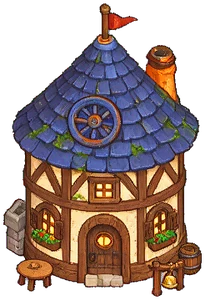
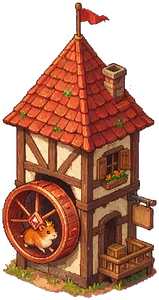
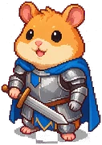

Build a hamster village. Grow with a real wheel.
Squeek Wars is a strategy game on Squeekchain. Every wallet founds one village. Squeektoshi, Squeekchain's hamster, really runs on his wheel: once a day his work is recorded on chain, pays SEED to every village and boosts production. Every village has a champion; holding a Squeek makes it a little stronger and your building faster.
How it works
One village per wallet. Build it up, let the hamster boost it, and raid neighbours and wild camps when your attack is at least twice their defense.

Build
Town Hall, Walls, 8 fields and up to 12 plots for the Wheelhouse, Storehouse, Burrow, Barracks, Academy, Market, Vault, Forge and Clan Hall.

Grow with the wheel
Every day at 04:00 UTC anyone can record Squeektoshi's work. Each village then claims SEED, and the Wheelhouse turns the same work into extra Wood, Food, Stone and Iron.

Fight
Train seven unit types, scout and raid on a 100 × 100 map with 200 wild camps. No luck: twice the defense wins, and you see the numbers before you send.

Lead with a champion
Every village has a champion that levels up to 30 from battles and the daily work. Hold a Squeek for +10% XP and stats; Squeeks also speed up building, up to 30%.
The wheel bonus
Wheel bonus = the last recorded day's work ÷ 4,320
capped at +25% per Wheelhouse level


Units
Attack and defense decide every battle. There is no randomness: an attack of at least twice the defense wipes the defenders and loots; anything less only costs both sides troops. Scouts give +10% attack on a target for 12 hours.
Rules
The game rules are enforced by the contracts on Sepolia. The numbers below are the launch defaults: the season's rule table (GameConfig) can tune them, and every change is public in the log below. Nobody can pause the game or touch your village.
How the game works
- One village per wallet, open to everyone. Your village name is final. Production and SEED are the same with or without a Squeek.
- A day starts at 04:00 UTC. The first player to press Checkpoint records the day's work for everyone; then every village presses Claim SEED.
- Raids take resources only: Wood, Food, Stone and Iron above the Vault's protection. SEED, NFTs and buildings are never taken.
- You win only with twice the defense. Then every defender falls, you loot, and 20 Catapults knock down a Walls level (repaired after 12 h).
- New villages get a 7-day shield. Attacking or scouting ends your own shield early.
- 3 raids per target per day. Raids on villages 3 or more Town Hall levels below yours give half loot and no points.
- No trading between players. The Market exchanges your own resources; SEED goes into resources, never back.
- Moves resolve when someone presses Resolve. Anyone can resolve an army that has arrived, so battles never wait on the attacker.
Fair play
- No feeder accounts. Don't run extra wallets just to feed a main village.
- No bug abuse. If something gives you resources or wins it shouldn't, report it instead of using it.
- Keep names clean. No offensive, hateful or impersonating names.
- Leave the site alone. Don't overload the public RPCs or other players' devices.
FAQ
No. You only pay Sepolia gas, which is test ETH from a faucet.
From SqueekCore on Sepolia: the hamster's cumulative work. Each daily checkpoint pays work ÷ 10 SEED to every village that claims.
The missed work is not lost: it lands on the next checkpoint. Production keeps using the last recorded day's bonus until then.
Contracts never act on their own. When the timer ends, press Finish (anyone may). Production at the new level starts from that moment.
No. A Squeek gives your champion +10% XP and stats, and Squeeks speed up building after a good day of work; each extra Squeek helps half as much.
This is the Sepolia practice season. Mainnet opens after the official Squeek mint, and testnet progress does not carry over.
No. The game only reads how many Squeeks your wallet holds; it never moves tokens.
Contracts
Season 2 on Sepolia (chain 11155111). The website reads the contracts directly from public RPCs; there is no server.